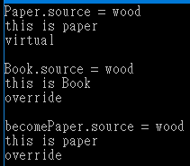
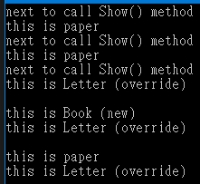

C#關鍵字-Override 和 New 的使用
以下範例可示範Override 和 New 的使用
範例一、
1 | using System; |
執行結果

說明：
1、Paper為父類別，Book為衍生類別；我們特別注意 becomePaper 變數，
becomePaper 變數是由 Book衍生類別轉型成 Paper父類別，
執行 becomePaper.Show()時，由於 Book衍生類別裡的 Show()方法，使用關鍵字「new」，
所以很直覺的以「何種型別就使用該型別自己的同名方法」來處理，
現在 becomePaper 變數算是父類別，所以是呼叫父類別裡的 Show()方法。
但 becomePaper.Show2() 方法就不一樣了，其使用關鍵字「override」，
意思為不管變數是否有轉型為父類別，呼叫的同名方法一律以有指定關鍵字「override」的方法來執行。
2、使用關鍵字「override」時需注意，父類別的方法需加註關鍵字「virtual」。
範例二、
using System;
namespace ConsoleApp3
{
class Program
{
static void Main(string[] args)
{
Test1();
Test2();
Test3();
Console.ReadKey();
}
public static void Test1()
{
Paper Paper = new Paper();
Paper.CallShow();
Book Book = new Book();
Book.CallShow();
Letter Letter = new Letter();
Letter.CallShow();
Console.WriteLine();
}
public static void Test2()
{
Book Book = new Book();
Letter Letter = new Letter();
Book.Show();
Letter.Show();
Console.WriteLine();
}
public static void Test3()
{
Paper Book = new Book();
Paper Letter = new Letter();
Book.Show();
Letter.Show();
Console.WriteLine();
}
}
class Paper
{
public string source = "wood";
public virtual void CallShow()
{
System.Console.WriteLine("next to call Show() method");
Show();
}
public virtual void Show()
{
Console.WriteLine("this is paper");
}
}
class Book : Paper
{
public new void Show()
{
Console.WriteLine("this is Book (new)");
}
}
class Letter : Paper
{
public override void Show()
{
Console.WriteLine("this is Letter (override)");
}
}
}
執行結果

說明：
只看 test1() 方法中的三個小呼叫，其他例子請自行參考，
Paper Paper = new Paper();
Paper.CallShow();
CallShow() 是父類別的方法，Paper 類別也是父類別，執行上很直覺無疑問。
Book Book = new Book();
Book.CallShow();
藉由 Book變數呼叫 CallShow() 父類別方法，但注意到CallShow()方法中，
還會去執行同名方法 Show()；一般人可能認為 Book變數並沒有轉型，
所以看到 Book類別裡有使用關鍵字「new」的Show()方法，
應該會出現「this is Book (new)」訊息才對。
但由於是利用父類別方法 CallShow() 去執行同名方法 Show()，
故，會執行父類別底下的 virtual Show()方法。
Letter Letter = new Letter();
Letter.CallShow();
此例也是藉由 Letter變數呼叫 CallShow() 父類別方法，但跟上例不同的是，
Letter類別裡有使用關鍵字「override」的Show()方法，
關鍵為 Letter變數是衍生型別，當底下有指定「override」方法時，
不管是否間接利用父類別方法去執行同名方法 Show()，
則一律呼叫衍生型別底下的同名方法。
以下節錄自 吉米.NET 我覺得很有道理作為本文總結
1、override 覆寫繼承自基礎類別的 virtural 方法，可以理解為拆掉老房子，
在原址上建新房子，老房子再也找不到了（基礎類別方法永遠調用不到了）。
2、new 隱藏繼承自基礎類別的virtual方法，老房子還留着，
在旁邊蓋個新房子，想住新房子的住新房子（作為衍生類別對象調用），
想住老房子住老房子（作為基礎類別對象調用）。
參考資料：
了解使用 Override 和 New 關鍵字的時機 (C# 程式設計手冊)